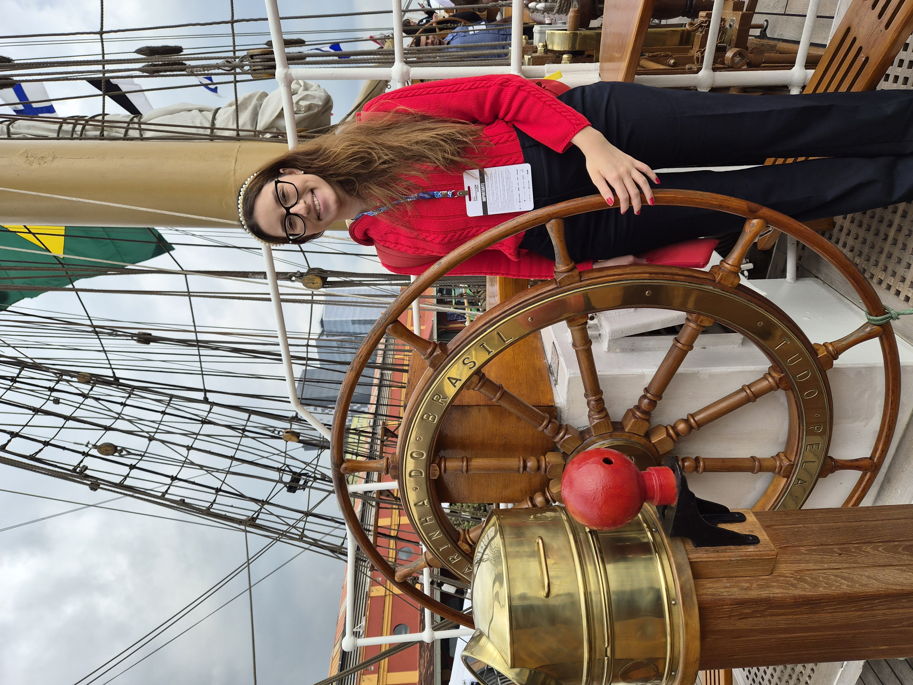

Naval Engineering
meets Machine Learning.
Naval & Ocean Engineering undergraduate researcher at UFRJ (LAMCE/COPPE) focused on structural integrity, operational efficiency, and offshore asset safety. Leveraging Python, Neural Networks, and 3D CAD to build Digital Twins and Decision Support Systems for the energy and maritime sectors.

Global Footprint & Conferences in Action
Hover to pause • Click any photo to expand
Research & Projects
Building real-world solutions
Risk Copilot Búzios
Digital twin optimizing the operability and structural safety of FPSO units in the pre-salt field. Trains neural network committees in Python across 11 years of ERA5 metocean Big Data to analyze critical phenomena (sloshing, thermal plumes), targeting >30% reduction in WOW downtime and +32% OPEX savings.
GOLD MEDAL (TEAM LEADER) & ANP RAA SALVADOR
• Awarded Gold Medal as Team Leader at the China Int'l College Students' Innovation Competition (Brazil Regional, 2026).
• Presented on-site in Salvador, Bahia at the ANP RAA / PRH-ANP National Meeting (Oct 2026).
Sino-Latam Streamline
Lead Naval Engineer & Workflow Coordinator for an off-grid Floating Hub ecosystem in the Amazon. Spearheaded modular physical retrofitting, AutoCAD 3D drafting, material research, and structural stability modeling resilient to extreme Amazonian flood pulses.
SILVER MEDAL (TOP 12) & OUTSTANDING RECORDER • Awarded Silver Medal (Global Finals in Chile & 2027 China Exchange) and the individual Outstanding Recorder Certificate (Best Overall) across all global teams.
Safeguarding the Grand Canal
Co-authored the technical policy proposal "Safeguarding the Grand Canal: Neural Networks and Hydro-Structural Digital Twins in Heritage Policy" at the Global Development Public Policy Youth Innovation Contest Finals.
HONORABLE PROPOSAL & CHINA INVITATION • Awarded a Level II Travel Subsidy and invited to the on-site programme in Beijing and Suzhou, China.
Arctic Adaptation
Authored a formal technology transfer proposal targeting Gazprom Neft Shelf and Rosatomflot to adapt tropical digital twin frameworks for extreme ice-class structural stress at the Prirazlomnaya Offshore Platform.
View R&D DeckUAV Drone CAD
Independent industrial design project utilizing AutoCAD. Designed a complete 3D wireframe and solid model of a quadcopter Unmanned Aerial Vehicle (UAV), demonstrating precision in spatial geometry, component assembly, and technical drafting.
Watch CAD RenderThe Blue Diplomacy Network
Co-Creator & EdTech Strategist. Recognized as a Global Finalist by GEEP, NAAEE, and the Ocean Affairs Council. Co-developed a multilingual (EN, PT, RU, JA) gamified platform featuring 3-player co-op "Regional Simulation Rooms" and an educator dashboard to demystify UNCLOS and tackle marine debris.
Maritime Financial Security
Co-authored and presented "The Sea as an Invisible Infrastructure of the Economy" at the V International Olympiad on Financial Security in Krasnoyarsk, Russia. Analyzed Trade-Based Money Laundering (TBML) and critical port cybersecurity vulnerabilities.
Generative AI Media
Demonstrated practical mastery of LLM interaction by developing a fully synthetic audiovisual project, leveraging advanced prompt engineering to synchronize high-fidelity video sequences and custom audio tracks.
Access BragBookMaritime Economics & SCOOBY
Container Shipping Geopolitics (2025)
Critical analysis evaluating shipowner strategies and the four major maritime economic cycles.
SCOOBY Biological Membranes (2021)
Sustainable biological membrane system for water purification aligned with maritime ESG practices.
View Written ReportAcademic Trajectory
EducationFederal University of Rio de Janeiro (UFRJ)
AUG 2022 – AUG 2028B.Sc. in Naval & Ocean Engineering (7th Semester)
Focusing on offshore structures, hydrodynamics, and maritime systems. Bridging physical engineering with Machine Learning through the PRH-04 Program (funded by ANP at LAMCE/COPPE).
Tsinghua University
JUL 2025 – JAN 2026Tech & Management Exchange (Beijing, China)
Coursework bridging technical coding foundations (Computer Programming) with strategic frameworks (Project Management & Innovative Product Development).
Aspire Institute
AUG – DEC 2025Aspire Leaders Program (Founded by Harvard Business School Faculty)
Graduated as a global finalist (top 18% of 54,000+ applicants worldwide), focusing on organizational leadership and global impact.
Escola ORT Brazil
2019 – 2021Technical High School in Biotechnology
Specialized technical education focused on applied environmental sciences and complex laboratory procedures.
Languages
5 LanguagesHonors & Awards
Global & National-
International Festival of Youth (2026) Selected & Invited Global Delegate in science, education, and IT to shape the global youth agenda (Sep 11–17, 2026).
-
Invited Presenter & Researcher — ANP RAA (2026) PRH-ANP National Meeting (Salvador, Bahia – Oct 2026). Presented the "Risk Copilot Búzios" offshore digital twin on-site to oil & gas industry leaders.
-
Gold & Silver Medalist — China-Latam Innovation Contests (2026) Gold Medal (Team Leader) at China Int'l Innovation Competition; Silver Medal (Top 12) & Outstanding Recorder (Best Overall) at the Poverty Alleviation Challenge; Top 35 Honorable Proposal at Renmin Univ.
-
Global Finalist — GEEP (2026) & Financial Security Olympiad (2025) Recognized by GEEP/NAAEE for The Blue Diplomacy Network (2026) and Finalist in Krasnoyarsk, Russia at the V Int'l Olympiad on Financial Security (2025).
-
Japanese Oratory Contest, 連盟 (2024–2026) Silver Medalist (2nd Place, 2026) & Three-Time Honoree at Associação Nikkei do Rio de Janeiro.
-
National Science Bronze Medal & Panama Canal Tech Visit (2020) Bronze Medalist at the Brazilian Nat'l Science Olympiad & Scholarship recipient for World ORT Ecology Summer School in Panama.
Academic Endorsements
Recommendations from Faculty & Research Advisors
"She has established herself as a promising researcher with strong potential for academic and technical performance at an international level... demonstrating remarkable ability in integrating concepts of ocean engineering, computational modeling, and risk analysis."
Prof. Luiz Paulo Assad
Tech Coordinator, LAMCE/COPPE - UFRJ
"Apart from her technical skills Anna Paula is also a very good student, with great academic performance. Our course is heavily focused on complex experimental procedures so group coordination is a necessity. She showed good group skills, always performing her tasks as intended."
Prof. Eduardo Gamosa de Oliveira
Head of Biotechnology Department, Escola ORT
"Ms. Tambasco has demonstrated a high level of understanding and notable ability in critical thinking and teamwork. She demonstrates a great ability to adapt and continually learn."
Prof. Dr. Angelo M. Gomes
Associate Professor, Physics Institute - UFRJ
"The student is proactive and presents a good capacity for communication... always seeking to have her doubts resolved and always available to assist with the doubts of other students."
Prof. Aline Freitas, M.Sc.
Assistant Professor, Graphic Expression - UFRJ
"I emphatically recommend her not only for her excellent intellect but also for her upright character. She demonstrated an unwavering dedication to learning and academic excellence."
Prof. Dr. Gladys C. Silva
Assoc. Prof, Univ. of Amazonas / Escola ORT